The Foundation
Private & Small-Group Surf Coaching
From $80 per person
Designed for beginners and developing surfers who want personalized instruction in Tamarindo.
Explore The Foundation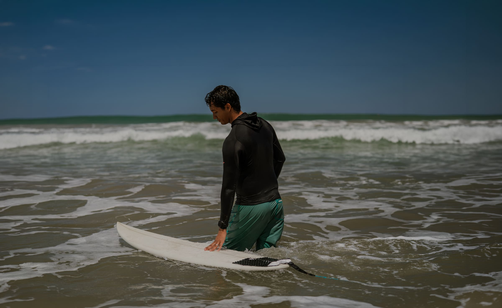
Private Surf Coaching & Adventures
Built for real progress.
Our mission
Through personalized surf coaching, guided adventures, and a deep respect for nature, we help people move beyond simply learning to surf. Our purpose is to create space for confidence, discovery, and meaningful experiences in and out of the water.
Every session, tour, and coaching program is designed to help our guests connect with the ocean, explore the beauty of Costa Rica, and leave with a deeper understanding of both surfing and themselves.
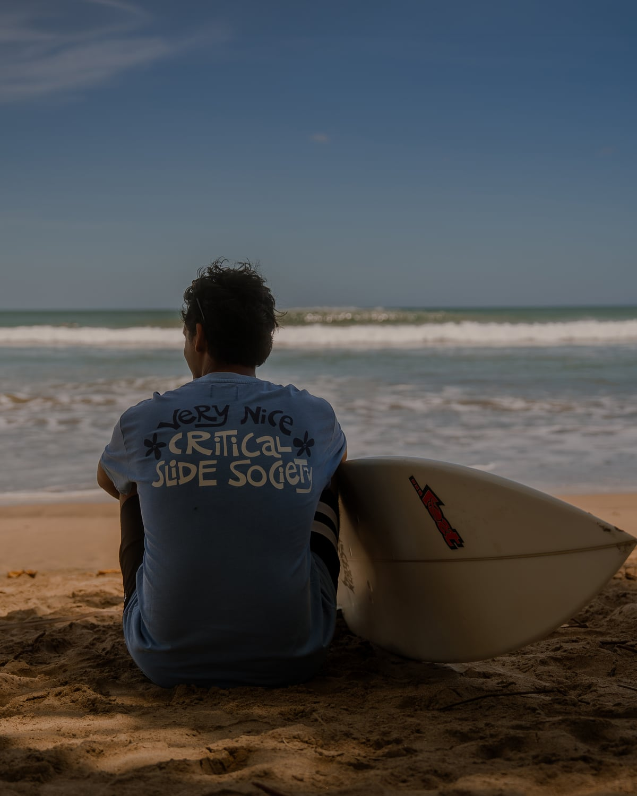
My story
My name is Mateo. I moved from Colombia to Costa Rica when I was 13 years old. At the time, I had never surfed, didn't even know how to swim, and knew absolutely nothing about the ocean or surfboards. One day, while walking along Tamarindo Beach, I saw people surfing and was instantly captivated. I told my mom I wanted to learn.
Before getting my first surfboard, a family friend gave me a boogie board. That's where it all started. I learned how to catch waves, understand the ocean, and even stand up on it.
One day, a surf instructor noticed me in the water and invited me onto one of his longboards. He pushed me into wave after wave, giving me guidance and encouragement along the way. That experience stayed with me and sparked something much bigger than a love for surfing.
Soon after, my mom bought me my first surfboard, and I was fortunate to meet a family who shared a deep passion for surfing. They became my mentors, teaching me about the ocean, helping me grow as a surfer, and passing on a connection and love for the sport that would shape my life.
Surfing taught me to respect the ocean, appreciate its beauty, and understand its constantly changing nature. More importantly, it showed me the power of sharing a passion with others. The same way that a surf instructor, a group of friends, and an entire community helped shape my journey, I now strive to pass that passion on to every person I have the privilege to teach.
Lean Forward was born from that purpose. My goal is not simply to teach people how to surf. It is to help them build confidence, connect with the ocean, discover what they are capable of, and experience the incredible feeling that comes from riding a wave.
Because sometimes, one wave can change much more than your day. It can change your life.
Lean Forward — Smooth Connection.
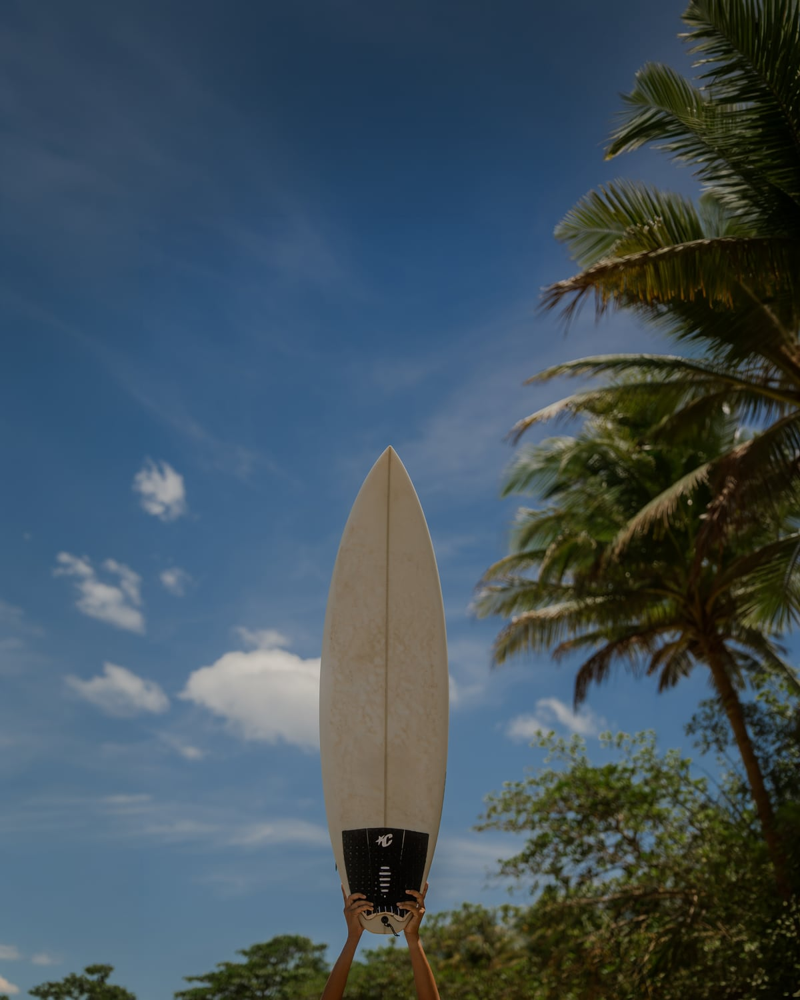
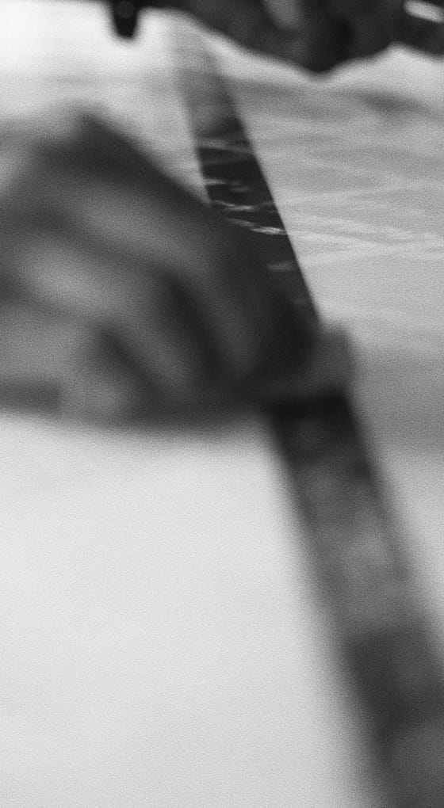
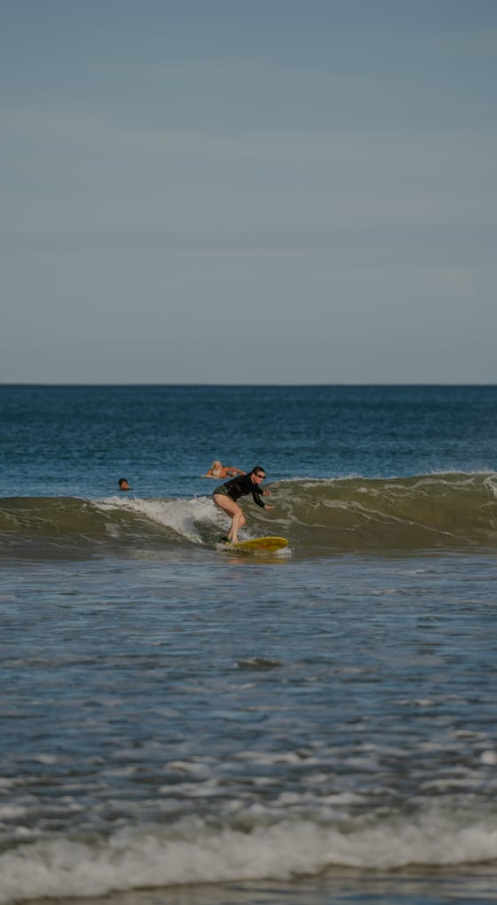
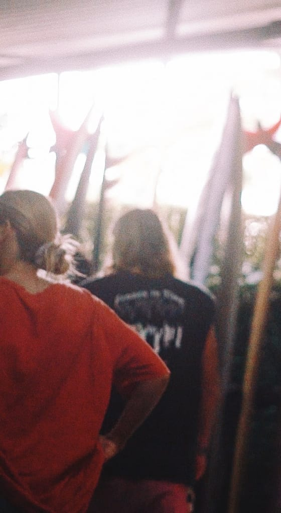
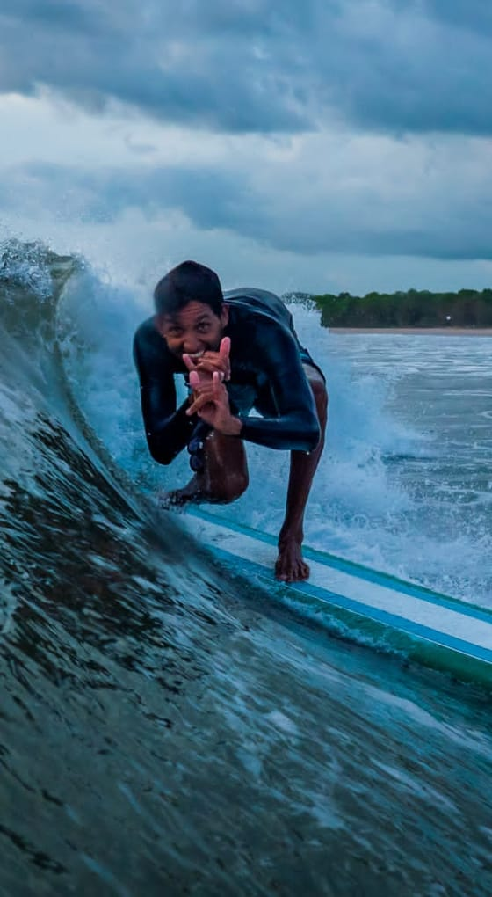
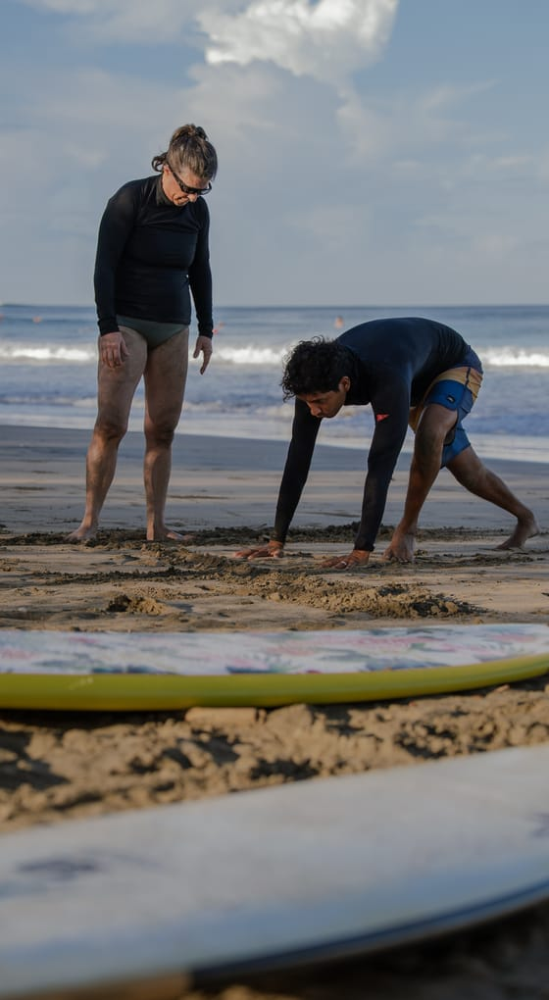
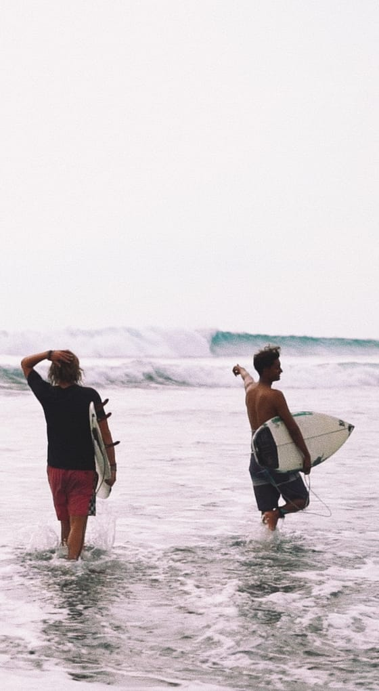
At Lean Forward, surfing is more than learning a skill.
It's a way to connect with nature, build confidence, and develop a deeper understanding of yourself through the ocean.
Founded by Mateo in Tamarindo, Lean Forward combines professional surf coaching with authentic Costa Rican experiences designed to help you progress, explore, and reconnect.
Whether you're catching your very first wave or looking to refine years of experience, every session is built around your goals.
Signature experiences
Private & Small-Group Surf Coaching
From $80 per person
Designed for beginners and developing surfers who want personalized instruction in Tamarindo.
Explore The FoundationGuided Surf Tours
From $130 per person
For intermediate surfers ready to discover the best waves beyond Tamarindo.
See the guided toursSurf & Nature Adventures
From $230 per person
Personalized surf coaching paired with a deeper Costa Rican Experience.
Discover The Immersion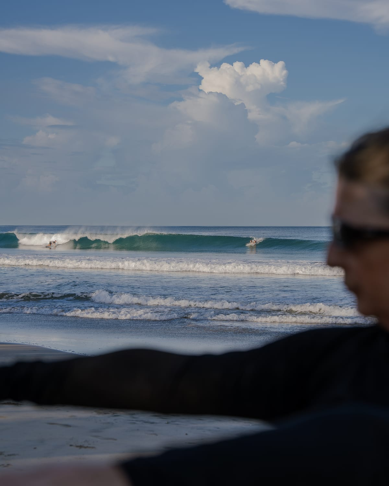
Signature Progression Week
A special package you can book all together
For surfers staying in Costa Rica who want to make meaningful progress over several days or weeks. Designed for travelers renting villas, Airbnbs, or spending extended time in Tamarindo.
Understand what to practice, why it matters, and how to continue improving long after your trip ends.
Discover the Signature Progression WeekWhy Lean Forward
Sessions tailored to your unique goals and current skill level.
A structured approach built to see real results in every wave.
Detailed technical analysis to refine your form and technique.
Experience the ocean, coastline, and hidden beauty of Guanacaste beyond the typical tourist path.
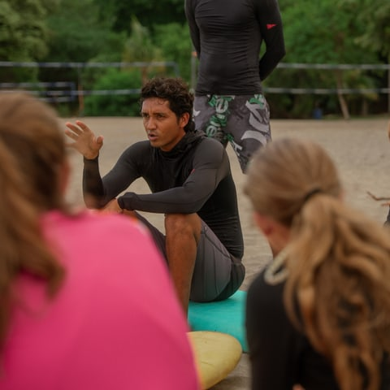
What clients say
If you are looking for a surf instructor that perfectly balances thoughtful instruction, motivation while learning a difficult sport, and having endless fun in beautiful Costa Rica, Mateo is the instructor for you. He is one of the best surf instructors you can have.
Mateo's surf lessons are always a ton of fun and his instructions are insightful and motivational. He knows the best surf spots and finds the best waves, so all you have to do is focus on the fun and "lean forward" to catch that wave!
I am newer to surfing and not the most confident, and Mateo helped me feel safe and comfortable in the water and on the board. Over a few lessons he helped me learn to catch waves on my own! Mateo provided excellent and personal feedback and his passion for surfing is contagious!
We love Mateo at Lean Forward Surf Academy! I'm an older guy (late 50s), wasn't in great shape, and had very little surf experience before my first trip to Tamarindo. But Mateo made the whole experience welcoming, encouraging, and genuinely fun.
Mateo has been our instructor on multiple trips now, and the difference from the first lesson to where we are today is night and day. He's incredibly patient and knows exactly how to break things down for beginners and out-of-shape folks like me. He never made me feel rushed or embarrassed, even when I was eating sand or flopping off the board in the whitewater.
What really sets Lean Forward apart is how they treat you. From day one, Mateo treated my wife and I like family. After a few trips, it honestly feels less like booking surf lessons and more like going to visit family in Costa Rica.
The lessons themselves are excellent, safe, progressive, and focused on building real skills instead of just pushing you into waves you're not ready for. They also have a professional videographer who films your sessions and provides feedback afterward.
If you're an older traveler, beginner, or just not in peak physical condition, I can't recommend Lean Forward Surf Academy and Mateo enough. Highly recommended—5 stars!
5 Stars – Couldn't Recommend Him More! Taking intermediate surf lessons with Mateo was one of the best experiences I've ever had in the water. As a nervous intermediate surfer, I was honestly a little intimidated showing up.
From the very first session, Mateo made me feel completely at ease. He's incredibly patient, intuitive, and knows exactly how to calm nerves while still pushing you to improve. He broke everything down clearly: wave selection, timing, positioning, and safe wipeout techniques.
By the end of our lessons, I was catching more waves, riding them with confidence, and actually enjoying the bigger stuff instead of fearing it. But what surprised me most is how Mateo went beyond being an amazing instructor — he and his wife are now like family.
If you're a nervous intermediate looking to level up, book with Mateo immediately. You'll not only become a better surfer, you'll gain a friend in the process.
Mateo is the best! I had done a few surf trips before as a beginner and felt really uncomfortable and scared in the water. Mateo helped me feel so much more confident and understanding of the water.
He's so personable and makes the lesson fun. When we went back to Tamarindo the following September, Mateo remembered all the progress I had made previously. We picked up where we left off and I gained even more confidence in myself.
You'll learn about the waves, the surf techniques, and a bit more about yourself with Mateo. If I go somewhere to surf that isn't Tamarindo I still have Mateo's tips in my head. He truly puts his heart and soul into your success. I couldn't recommend a better instructor.